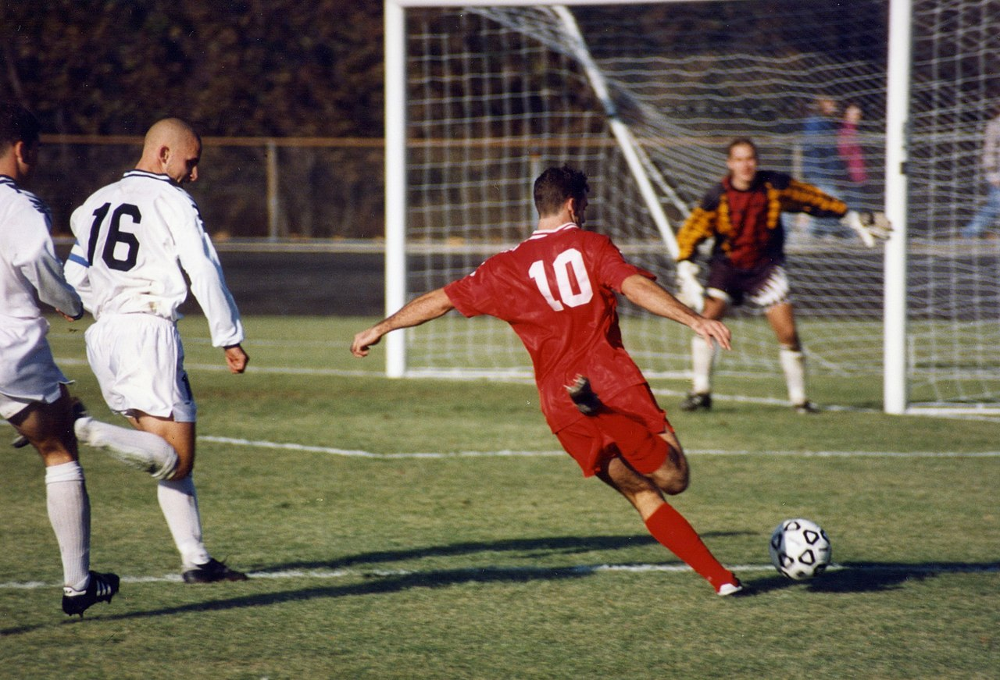
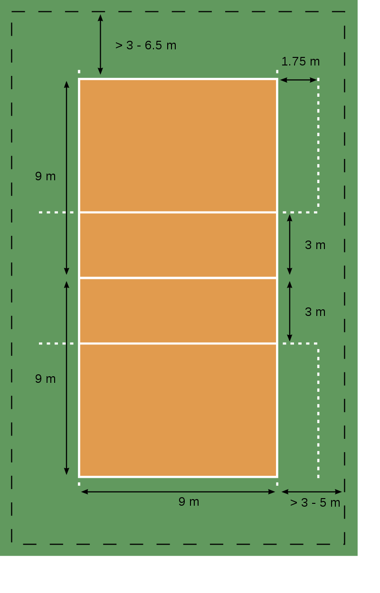

JQuery
Krepšinis
Krepšinis – komandinė sporto šaka, kurioje žaidžiama kamuoliu. Krepšinis žaidžiamas aikštelėje, kurioje 2 komandų žaidėjai stengiasi surinkti kuo daugiau taškų, mėtydami kamuolį į specialų krepšį. Tai pati populiariausia sporto šaka Lietuvoje ir viena populiariausių sporto šakų JAV, pietų ir pietryčių Europoje, buvusiose Tarybų Sąjungos ir Jugoslavijos šalyse, Argentinoje, Filipinuose, Libane, Kinijoje, Angoloje, Senegale.
Krepšinio žaidimą sugalvojo kanadietis daktaras Džeimsas Neismitas (James Naismith) 1891 metais. Naujosios sporto šakos paskirtis buvo užimti studentus sportu žiemos metu, kai nėra sąlygų žaisti beisbolą ar amerikietišką futbolą. Pradžioje žaidime buvo naudojamas futbolo kamuolys ir krepšiai su dugnu, taigi po kiekvieno pataikyto metimo kamuolį reikėdavo ištraukti iš krepšio. Komandose buvo po 9 žaidėjus.
Pačių pirmųjų krepšinio rungtynių rezultatas buvo tik 1:0.
Lietuvoje krepšinis pradėtas populiarinti 1921 m. Pirmieji šia sporto šaka susidomėjo Lietuvos Fizinio lavinimosi sąjungos (LFLS) sportininkai. Pirmosios krepšinio rungtynės įvyko Kaune 1922 m. balandžio 23 d. tarp Kauno rinktinės ir LFLS komandos. Tais pačiais metais moterų komanda dalyvavo pirmajame nacionaliniame čempionate. Vyrų komanda nacionaliniame čempionate žaidė 1924 m. 1939 m. buvo pastatyta Kauno sporto halė (specialiai krepšiniui pritaikyta sporto salė). Dabar Lietuvoje dirba 400 etatinių trenerių, krepšinio varžybose respublikoje teisėjauja 201 teisėjų, tarp jų 11 tarptautinės kategorijos, bei 7 FIBA komisarai. Apie 100 000 Lietuvos gyventojų žaidžia krepšinį savo malonumui. Lietuvos krepšinis atstovaujamas daugelyje pasaulio ir Europos čempionatų – jaunučių, jaunių, suaugusiųjų, taip pat olimpinėse žaidynėse. Per neilgą Lietuvos krepšinio istoriją mūsų valstybės krepšininkai (vyrai) tris kartus tapo olimpinių žaidynių prizininkais (2000, 1996 ir 1992 metais jie iškovojo trečiąją vietą ir gavo bronzos medalius). Tris kartus Lietuvos krepšininkai tapo Europos čempionais (1937 m. Rygoje, 1939 m. Kaune ir 2003 m. Stokholme), triskart tapo Europos vicečempionais (1995 m. Atėnuose, 2013 m. Liublianoje, 2015 m. Lilyje, Prancūzija ), ir kartą laimėjo bronzą (2007 m. Ispanijoje). Iškovojo bronzos medalius XVI Pasaulio vyrų krepšinio čempionate (2010 m. Turkija). Lietuvos moterų rinktinė taip pat gali didžiuotis Europos čempionių (1997 m.) ir vicečempionių vardais. Europos čempionais prieš keletą metų tapo jaunimo ir jaunių komandos. 2005 m. Lietuvos jaunimo (vaikinų) komanda tapo pasaulio čempione. Sėkmingai žaidžia ir Lietuvos krepšinio veteranai, laimėdami nugalėtojų ir prizininkų vardus pasaulio ir Europos čempionatuose. Garsiausia visų laikų Lietuvos krepšinio komanda yra Kauno „Žalgiris“, įkurta 1944 m. Kaune. „Žalgirio“ sąskaitoje daugybė titulų, tarp jų ir 1998–1999 m. laimėtas Eurolygos čempionatas. Garsiausias visų laikų Lietuvos krepšininkas yra Arvydas Sabonis, tapęs Europos, pasaulio bei olimpinių žaidynių čempionu, išrinktas geriausiu Europos krepšininku, sužaidęs keletą sėkmingų sezonų NBA. 2011 m. rugpjūčio 31 d. – rugsėjo 18 d. Lietuvoje vyko 37-tas vyrų Europos krepšinio čempionatas, kuriame triumfavo ispanijos rinktinė, lietuviai užėmė 5 vietą.


Futbolas
Futbolas – žaidimas kamuoliu tarp dviejų komandų. Kartais skiriant nuo amerikietiško futbolo vadinamas asociacijos futbolu, pagal Anglijos Futbolo Asociaciją, 1863 metais sukūrusią dabartinių taisyklių futbolo pagrindus.
Tai komandinis sporto žaidimas. Kiekvienoje komandoje yra po 10 aikštės žaidėjų ir po 1 vartininką. Žaisti galima visomis kūno dalimis, tik ne rankomis (daugiausia žaidžiama kojomis, iš kur ir kilo pavadinimas), o žaidimo tikslas – įmušti kuo daugiau įvarčių į varžovo vartus. Rungtynės trunka 2 kėlinius po 45 minutes; rungtynėse, kuriose būtinai turi būti išaiškintas nugalėtojas (jeigu tai nėra atkrintamosios arba finalas tai nebūna pratęsimų) tai, lygiųjų atveju prireikia pratęsimo – žaidžiami dar du kėlinukai po 15 minučių, o jei nugalėtojas vis tiek neišaiškinamas, kiekviena komanda muša po penkis 11 m baudinius. Teisėjas nusprendžia, kurie vartai bus naudojami baudiniams mušti, o metant monetą nusprendžiama, kuri komanda muš pirma. Kiekviena komanda išsirenka 5 žaidėjus, kurie paeiliui muš baudinius, ir komanda, įmušusi daugiau įvarčių po 5 bandymų, laimi. Jei ir ši baudinių serija neišaiškina nugalėtojo, abi komandos muša po 1 baudinį tol, kol viena komanda laimi.
Futbole naudojama daug išsidėstymo aikštėje schemų nuo 1950-aisiais populiarios 3-2-2-3 iki šiandieninės 4-4-2 (4 gynėjai, 4 saugai, 2 puolėjai). Profesionalios komandos, reaguodamos į priešininkų veiksmus, naudoja ir daugiau schemų (3-5-2, 4-5-1 ir kt.) bei jų variantų. Dabartiniame futbole žaidimo sėkmė labai didele dalimi priklauso nuo sugebėjimo kontroliuoti žaidimą aikštės viduryje. Futbolininkų pagrindinės pozicijos: Puolėjai – gavę kamuolį iš komandos draugų, jie stengiasi klaidindami gynėjus bei perduodami kamuolį komandos draugams sukurti progas įvarčiams įmušti arba patys įmušti įvartį. Jų darbas gynyboje – neleisti priešininkų komandai sukurti atakos. Atakuojantis saugas – jis vadovauja komandos puolimui ir organizuoja atakas. Jis nustato savo komandos žaidimo tempą bei privalo mokėti mušti įvarčius. Vidurio saugai – jie abu tiek ginasi, tiek ir atakuoja. Ginantis jie privalo perimti kamuolį iš atakuojančio žaidėjo, šiam dar nespėjus surengti atakos. Puolant jie perduoda kamuolį atakuojančiam saugui arba puolėjams bei jiems padeda. Vidurio saugai yra tarpinė grandis tarp gynybos ir puolimo. Krašto saugai – saugai, dažnai mėginantys prasiveržti savo kraštu, neretai skersuojantys kamuolį link vartų. Dažniausiai tai labai techniški žaidėjai, gerai valdantys kamuolį bei matantys aikštę. Krašto saugai dažniau dalyvauja atakose nei gynyboje. Atraminis saugas – jis turi stengtis perimti kamuolį iš atakuojančios komandos kaip galima greičiau. Taip jis padeda savo komandos gynėjams ir stengiasi kuo greičiau pradėti komandos ataką. Gynėjas – jis dengia priešininkų puolėją, neleisdamas jam užimti atakuojančios pozicijos. Dažnai tai aukšti ir šoklūs žaidėjai, atliekantys svarbų vaidmenį standartinėse padėtyse tiek ginantis, tiek ir puolant. Krašto gynėjai (dešinysis ir kairysis; angl. full back) – jie turi sustabdyti atakuojantį priešininką savo zonoje arba jį pristabdyti, kad komanda spėtų užsiimti gynybinę poziciją. Šiuolaikiniai krašto gynėjai neretai kontroliuoja visą savo kraštą ir padeda komandai atakose. Centro gynėjai (angl. centre back) – visada besiginantys žaidėjai, retai dalyvaujantys atakose. Atsitraukęs gynėjas (angl. sweeper) – jo pozicija yra už komandos draugų, čia jis vadovauja komandos gynybai. Jo tikslas nėra uždengti atakuojantį žaidėją, bet užpildyti atsiradusias gynybos spragas. Be to, jis gali organizuoti komandos atakas. Vartininkas – vienintelis žaidėjas, galintis kamuolį liesti rankomis (bet tik baudos aikštelėje), jo tikslas – sulaikyti atakuojančios komandos smūgius. Vartininkas yra paskutinė komandos gynybos grandis ir reguliuoja komandos draugus atakuojant priešininkų komandai.
Tinklinis
Tinklinis yra olimpinė komandinė sporto šaka, kurioje žaidžia dvi komandos sudarytos iš šešių žaidėjų. Abejas komandas skiria tinklas, o žaidėjų tikslas – permušti kamuolį per tinklą į priešininkų teritoriją ir uždirbti taškus pagal tam tikras taisykles. Visos tinklinio taisyklės yra plačios, tačiau dažniausiai žaidžiama taip: taškai uždirbami, kai kamuolys paliečia priešininkų komandos aikštelės grindis arba priešininkai padaro klaidą. Pirma komanda pasiekusi 25 taškus laimi setą, o pirmoji laimėjusi tris setus, laimi rungtynes. Viena komanda negali liesti kamuolio daugiau nei tris kartus, ir tai turi daryti skirtingi žaidėjai. Dažniausiai žaidžiama rankomis, tačiau taisyklės leidžia kamuolį liesti bet kuria kūno vieta. Kadangi žaidėjai dažnai šokinėja mušdami kamuolį per tinklą, svarbiausias fizinis veiksmas yra vertikalus šuolis. Tinklinis turi daug įvairių atšakų, iš kurių populiari yra kita Olimpinė sporto šaka paplūdimio tinklinis.
1895 m. vasario 9 d. JAV, Masačiusetso valstijoje William’as G. Morgan’as, kūno kultūros mokytojas sukūrė naują žaidimą Mintonette, kuris buvo skirtas žaisti salėse ir bet kokiam žaidėjų skaičiui. Kai kurias taisykles žaidimas perėmė iš teniso ir rankinio. Mintonette (vėliau pervadintas tinkliniu) buvo sukurtas kaip krepšinio atmaina – jis buvo švelnesnis žaidimas, skirtas vyresnio amžiaus žmonėms, tačiau vis tiek reikalaujantis šiek tiek fizinių jėgų. Po žaidimo sukūrimo pirmosios oficialios rungtynės buvo surengtos 1896 m. dabartiniame Springfyldo koledže. Po to žaidimas buvo pervadintas į tinklinį (anglų k. dar naudotas atskirais žodžiais volley ball) ir greitai išplito visose valstijose, o vėliau ir pasaulyje. Tarptautinė tinklinio federacija (prancūzų k. Fédération Internationale de Volleyball – FIVB) įkurta 1947 m., pirmasis pasaulio čempionatas vyrams surengtas 1949 m., moterims – 1952 m. Paskutiniai pasaulio čempionatai buvo 2014 m. Lenkijoje - vyrų ir Italijoje - moterų, kur čempionais tapo Lenkijos vyrų rinktinė ir JAV moterų rinktinė. Tinklinio istorija Olimpinėse žaidynėse prasidėjo 1924 m., kai Paryžiuje įvyko amerikietiškų sporto šakų mainnstracinės varžybos, kuriose buvo pamainnstruotas ir tinklinis. Varžybos buvo sėkmingos, tad 1964 m. tinklinis oficialiai jau buvo olimpinė sporto šaka.
